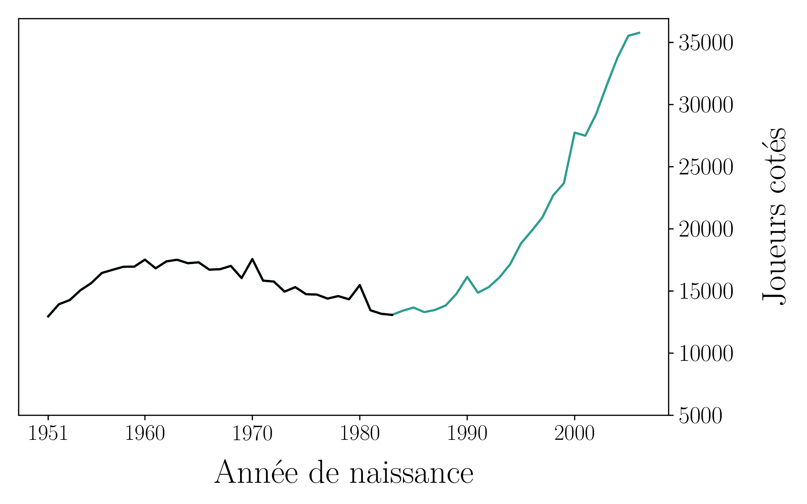

class: center, middle <style> .ev01{ margin-bottom:80px; } </style> # Le bien commun à l'ère des algorithmes ### Décembre 2021 <div class="ev01"></div> ## Mathieu Bergeron ### <a target="_blank" href="https://coderatie.org">coderatie.org</a> <div class="ev01"></div> <a ref="" href="https://creativecommons.org/licenses/by-sa/4.0/deed.fr" class="icon"> <img alt="Creative Commons License" style="border-width:0" src="cc.svg" width="46px" class="icon"/></a> <a ref="" href="https://creativecommons.org/licenses/by-sa/4.0/deed.fr" class="icon"> <img alt="Creative Commons License" style="border-width:0" src="by.svg" width="46px" class="icon"/></a> <a ref="" href="https://creativecommons.org/licenses/by-sa/4.0/deed.fr" class="icon"> </a> <a ref="" href="https://creativecommons.org/licenses/by-sa/4.0/deed.fr"><!--Creative Commons<br>-->Attribution - Partage dans les Mêmes Conditions</a><!--<br>4.0 International</a>--> --- # Plan <style> .ev02{ margin-bottom:0px; padding-bottom:20px; } </style> 1. Angoisse face à l'IA: les échecs dans les années 1990 <div class="ev02"></div> 1. L'angoisse se répend: Google, Facebook, Amazon, Uber, etc. <div class="ev02"></div> 1. Quelques pensées réconfortantes <div class="ev02"></div> 1. Renverser la tendance en partageant * le sens * la liberté * les revenus <div class="ev02"></div> <div class="ev02"></div> 1. Conclusion: vers un nouvel espace démocratique? --- class: center, middle # Les échecs dans les années 1990 --- # Un vent d'inquiétude <br> <table> <tr> <td style="text-align:center;"> <img src="echiquier_electronique.jpg" width="50%"/> </td> <td> </td> </tr> <tr> <td style="text-align:center;"> <a target="_blank" href="https://fr.wikipedia.org/wiki/Programme_d%27%C3%A9checs">fr.wikipedia.org/wiki/Programme_déchecs</a> </td> <td></td> </tr> </table> --- # L'humanité s'avoue vaincue <table> <tr> <td style="text-align:center;"> <img src="deep_blue.jpg" width="100%"/> </td> <td style="text-align:center;"> <img src="kasparov.jpg" width="100%"/> </td> </tr> <tr> <td style="text-align:center;"> <a target="_blank" href="https://fr.wikipedia.org/wiki/Deep_Blue">fr.wikipedia.org/wiki/Deep_Blue</a> </td> <td style="text-align:center;"> <a style="font-size:80%;" target="_blank" href="https://chess24.com/en/read/news/man-vs-machine-a-poet-on-kasparov-deep-blue">chess24.com/en/read/news/man-vs-machine-a-poet-on-kasparov-deep-blue</a> </td> </tr> </table> --- # Et la suite selon vous?... --- # L'IA a-t-elle supporté cet essor?  --- # Trois raisons possibles <style> .ev03{ margin-bottom:0px; padding-bottom:20px; } </style> <div class="ev03"></div> L'IA aux échecs: <div class="ev03"></div> 1. Permet d'apprendre <div class="ev03"></div> 1. Est contrôlable et modifiable <div class="ev03"></div> 1. N'a pas mené à une concentration de la richesse <div class="ev03"></div> --- class: center, middle # L'angoisse revient en force ## La montée des plateformes --- # Qu'est-ce qu'une plateforme? * Selon * Uber est un exemple --- # Le système *Upfront pricing* d'Uber --- class: center, middle # Quelques pensées réconfortantes --- # Enjeux désormais bien visibles * Recherche sur l'éthique des algorithmes * Il y a de la recherche sur l'IA éthique et explicable --- # L'IA est toujours sur-vantée 1. Plus résultats récents sont impressionnants 1. Mais l'IA n'est pas générale --- # Les changements culturels sont lents 1. Il est encore temps de préparer la société à cohabiter avec l'IA --- class: center, middle # Renverser la tendance ## Le bien commun à l'ère des algorithmes --- # Penser les algorithmes <br> <table> <tr> <th style="width:250px"> </th> <th style="width:250px;text-align:center;">Algorithme d'échecs </th> <th style="width:250px;text-align:center"><i>Upfront pricing</i> </th> </tr> <tr style="background-color:lightgray;"> <th style="padding-top:40px;padding-bottom:40px;text-align:center;">Portée pédagogique </th> <td style="vertical-align:middle;text-align:center"> Explications lisibles </td> <td style="vertical-align:middle;text-align:center"> Aucune </td> </tr> <tr style="background-color:whitesmoke;"> <th style="padding-bottom:40px;padding-top:40px;text-align:center;">Contrôle démocratique</th> <td style="vertical-align:middle;text-align:center"> Via le code source </td> <td style="vertical-align:middle;text-align:center"> Aucun </td> </tr> <tr style="background-color:lightgray;"> <th style="padding-bottom:40px;padding-top:40px;text-align:center;">Impact économique</th> <td style="vertical-align:middle;text-align:center;"> Indirect </td> <td style="vertical-align:middle;text-align:center"> Iniquité programmée </td> </tr> </table> --- # Continuer à comprendre le monde --- # Encourager la liberté informatique --- # Partager plus que le revenus --- # Comment avancer vers cet idéal? --- class: center, middle # Conclusion ## Vers un nouvel espace démocratique? --- class: center, middle # Conclusion ## Deux propositions politiques 1. La tendance est déjà à enseigner la programmation de façon plus générale 1. Le logiciel libre est en santé 1. 27% des programmeurs utilisent Linux (contre 1% en général) --- class: center, middle <style> .ev10{ margin-bottom:55px; padding-bottom:55px; } .td-image{ padding-right:30px; } </style> # Le bien commun à l'ère des algorithmes ### Article publié dans Liberté N<sup>o</sup> 329, novembre 2020 <div class="ev10"></div> # Merci! <div class="ev10"></div> # <a target="_blank" href="https://coderatie.org">coderatie.org</a> ### Plaidoyer pour une *véritable* démocratisation de l'informatique